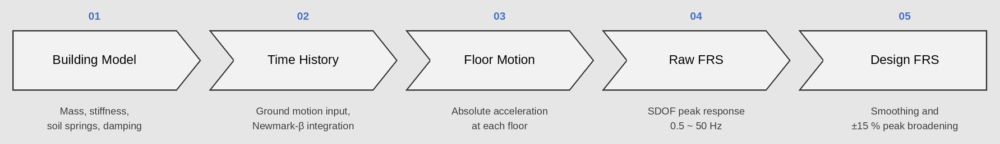
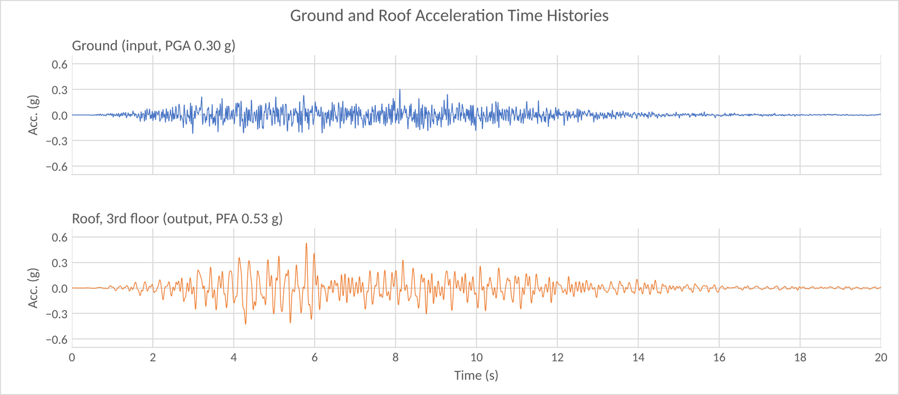

원자력발전소의 기기는 지반 운동을 직접 받는 것이 아니라, 설치된 층의 움직임을 받습니다.
건물이 지진을 걸러내고 증폭시키기 때문에, 층응답스펙트럼(FRS)은 건물의 시간이력해석 결과로 만듭니다.
각 층의 절대가속도를 0.5~50 Hz의 단자유도(SDOF) 진동자에 입력하고, 각 진동자의 최대 응답을 모아 원 스펙트럼을 만듭니다.
구조물 진동수의 불확실성을 고려하기 위해, RG 1.122에서는 스펙트럼을 평활화하고 피크를 양쪽으로 보통 15 %씩 확장한 뒤 기기의 설계 FRS로 쓰도록 하고 있습니다.

건물 응답은 기초 가진을 받는 운동방정식을 직접 적분해서 계산합니다.
γ = 1/2, β = 1/4(평균가속도법)의 Newmark-β 방법은 무조건 안정이므로, 시간 간격은 안정성이 아닌 정확도를 기준으로 정합니다.
널리 쓰이는 음해법이며, ANSYS Transient Structural 해석에서도 쓸 수 있습니다.
감쇠는 Rayleigh Damping C = αM + βK로 모델링하고, 1차와 3차 모드에서 7 %(RG 1.61의 철근콘크리트 구조물 SSE 값)가 되도록 계수를 맞춥니다.
시간 간격은 0.001 s로, FRS 상한인 50 Hz를 충분히 표현할 수 있습니다.

이번 예제에서는 층 질량 800, 800, 600 t, 고유진동수 4.5, 11.1, 16.0 Hz인 3층 전단 건물에 SRS 분석 페이지에서 쓴 합성 지반운동(PGA 0.30 g)을 입력합니다.
지붕 최대가속도는 0.53 g로 증폭됩니다.
지붕 FRS는 기기 내진검증의 SSE 값인 Damping 3 %로 만들었습니다(OBE는 2 %).
건물 진동수 근처에서 뾰족한 피크가 나타나며, 최대값은 4.24 Hz에서 3.45 g로 같은 진동수의 지반 스펙트럼보다 약 7배 큽니다.
피크를 양쪽으로 15 %씩 확장하면 3.45 g 구간이 약 3.8~4.8 Hz로 넓어집니다.
한마디로, 이 FRS로 설계한 기기는 건물 진동수의 작은 오차에 민감하지 않게 됩니다.

 SRS 분석 도구 사용해 보기
SRS 분석 도구 사용해 보기